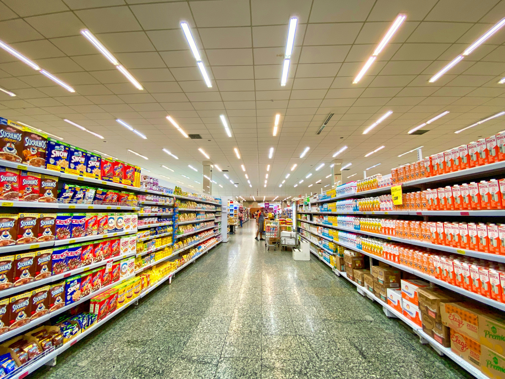

This project explores and analyzes a real-world supermarket sales dataset using Python.
It includes data cleaning, visual analysis, and hypothesis testing.
The analysis identifies the most profitable product lines, evaluates customer satisfaction based on payment methods using a t-test,
and explores correlations between ratings and purchase totals.
The project utilizes libraries such as pandas, seaborn, matplotlib, and plotly for in-depth and interactive data visualization.


A data-driven analysis of top-selling video game consoles using Python (Pandas, Seaborn, Plotly). The project highlights key sales statistics, trends over time, and comparisons between manufacturers—presented with clear, interactive visualizations.

This project scrapes and analyzes data on the largest U.S. companies by revenue from Wikipedia using Python (BeautifulSoup & Pandas). It automates data collection, cleans the table, and exports it to CSV for further analysis.
An EDA project using Pandas to analyze 2022 world population data. It includes data loading, inspection, identifying missing values, and highlighting the most populous countries and their share of the global population. The dataset offers insights for deeper analysis but requires some cleaning.

This notebook cleans customer data using Pandas, including removing unnecessary columns, handling missing values, standardizing phone number formats, and splitting addresses into street, state, and postal code. It also filters out customers who opted out of contact or have incomplete records.